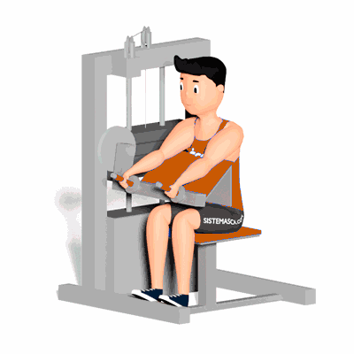

Tríceps no Aparelho

O exercício tem o objetivo de trabalhar o fortalecimento e hipertrofia do músculo Tríceps.
Ficha Técnica
Tipo: Musculação
Grupo Muscular: Tríceps
Aparelho: Nenhum
Músculos: Nenhum
Como realizar
- Sente-se no aparelho;
- Coloque os braços no apoio e segure as manoplas;
- Empurre as manoplas para baixo até o braço ficar estendido, concentrando a força no tríceps durante todo o movimento;
- Retorne a posição inicial e repita os movimentos pela quantidade de vezes indicado pelo professor(a).
 RC STORE
RC STORE